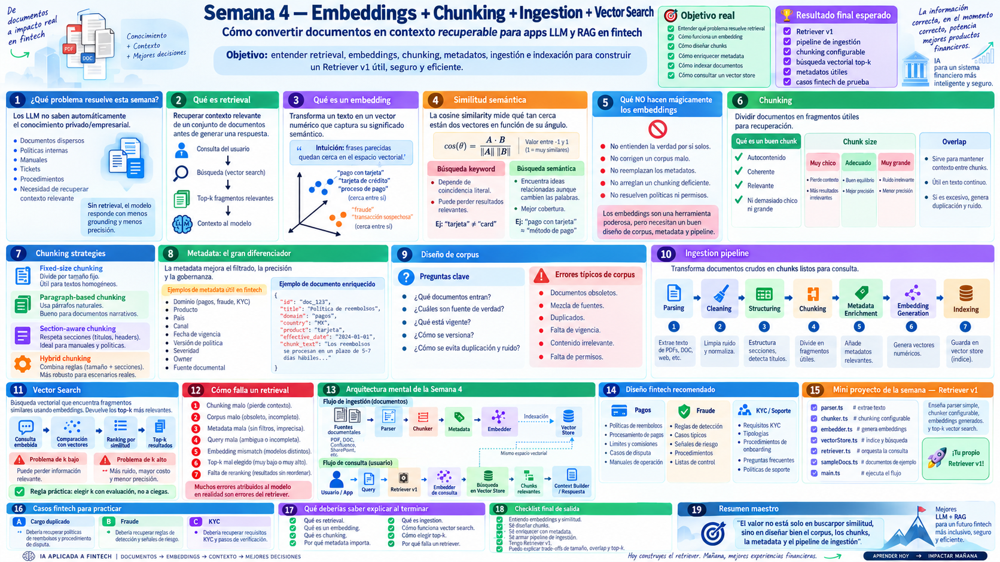
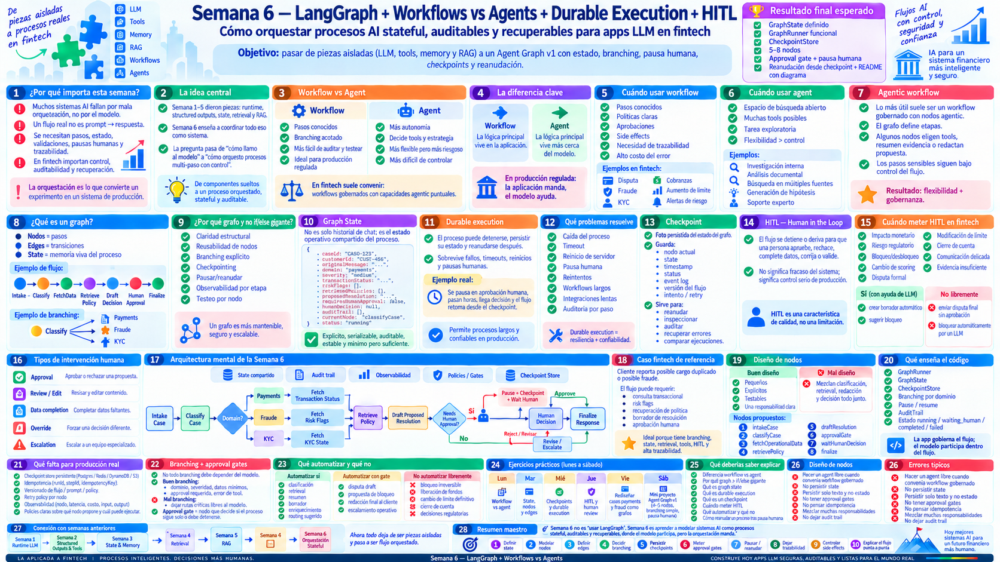
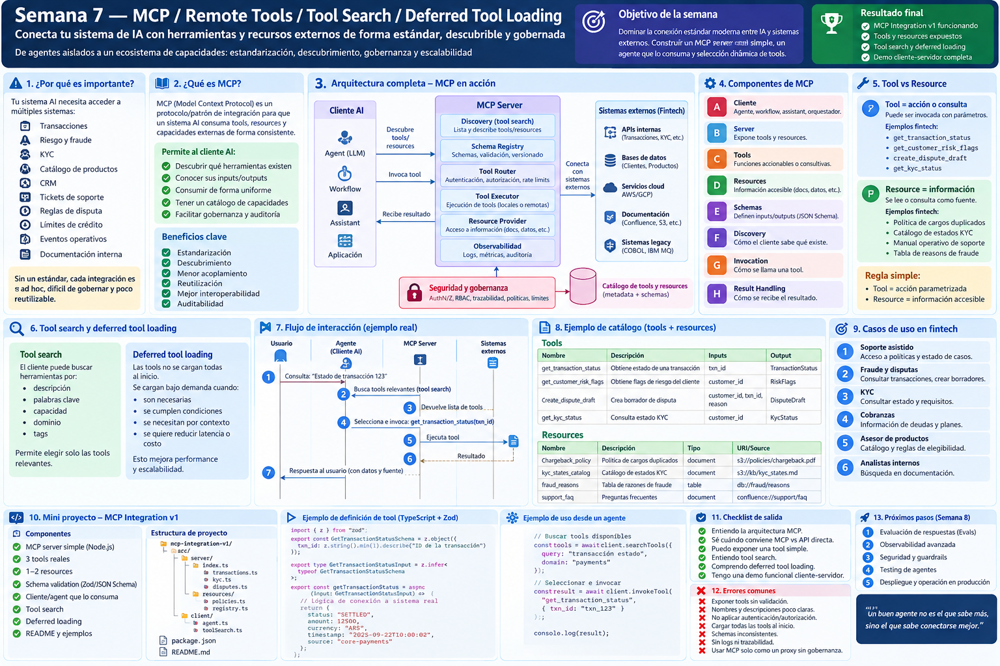
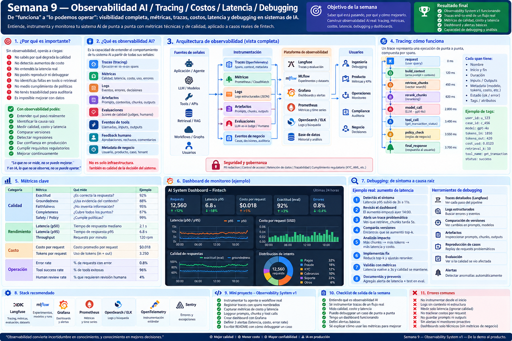
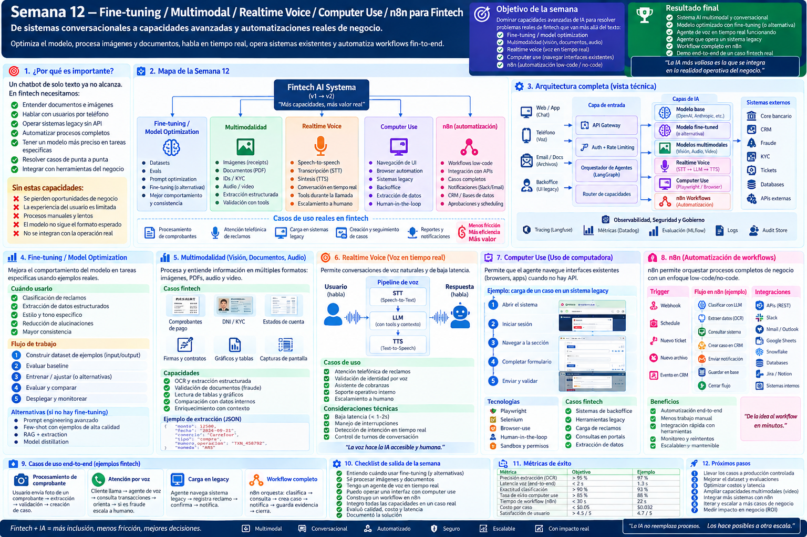
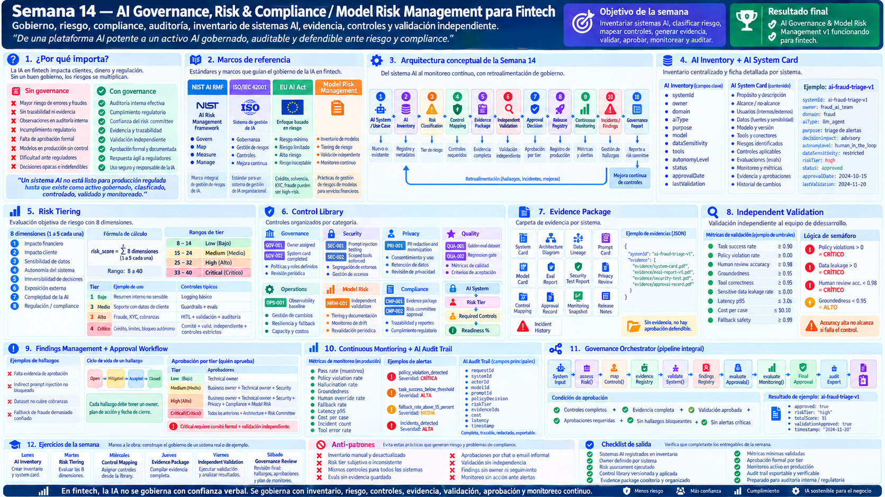
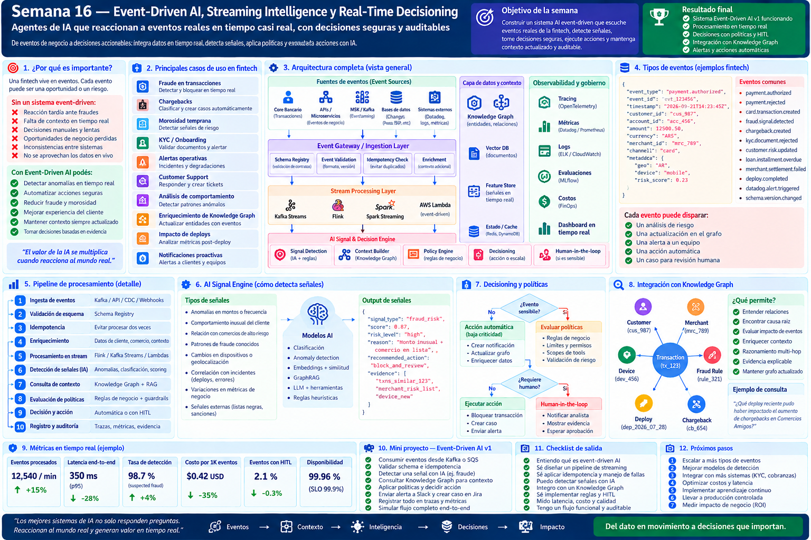
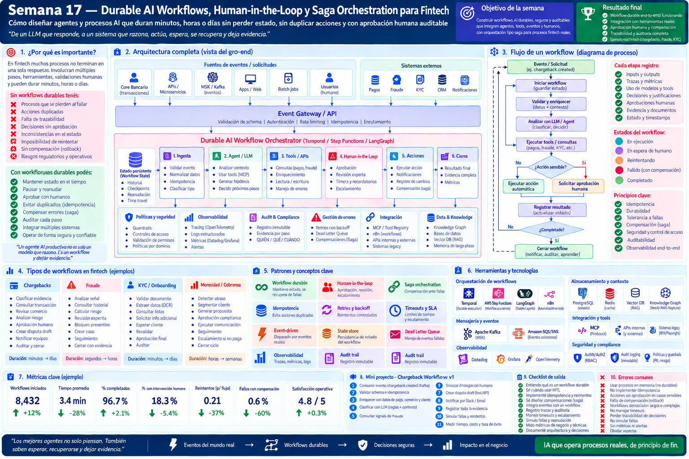

Semana 01 · Formación completa · Respuestas API, prompts y contexto
 Abrir imagen completa de la semana 01 ↗
Abrir imagen completa de la semana 01 ↗Las 19 infografías completas, en orden cronológico. Abrí cada imagen para verla a tamaño original y ampliar el texto.
Abrir imagen completa de la semana 01 ↗ Abrir imagen completa de la semana 02 ↗
Abrir imagen completa de la semana 02 ↗ Abrir imagen completa de la semana 03 ↗
Abrir imagen completa de la semana 03 ↗
Abrir imagen completa de la semana 04 ↗ Abrir imagen completa de la semana 05 ↗
Abrir imagen completa de la semana 05 ↗
Abrir imagen completa de la semana 06 ↗
Abrir imagen completa de la semana 07 ↗ Abrir imagen completa de la semana 08 ↗
Abrir imagen completa de la semana 08 ↗
Abrir imagen completa de la semana 09 ↗ Abrir imagen completa de la semana 10 ↗
Abrir imagen completa de la semana 10 ↗ Abrir imagen completa de la semana 11 ↗
Abrir imagen completa de la semana 11 ↗
Abrir imagen completa de la semana 12 ↗ Abrir imagen completa de la semana 13 ↗
Abrir imagen completa de la semana 13 ↗
Abrir imagen completa de la semana 14 ↗ Abrir imagen completa de la semana 15 ↗
Abrir imagen completa de la semana 15 ↗
Abrir imagen completa de la semana 16 ↗
Abrir imagen completa de la semana 17 ↗ Abrir imagen completa de la semana 18 ↗
Abrir imagen completa de la semana 18 ↗ Abrir imagen completa de la semana 19 ↗
Abrir imagen completa de la semana 19 ↗Las imágenes se mantienen sin recortar ni reducir su resolución original.